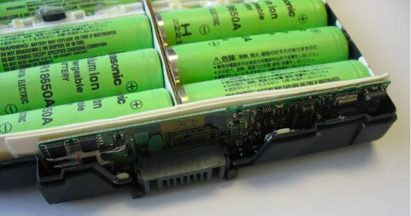
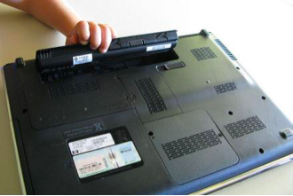
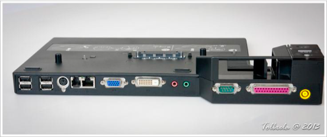
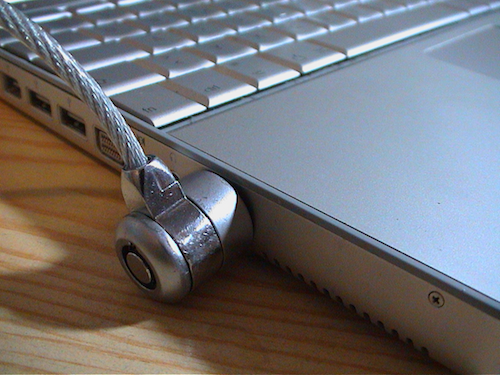
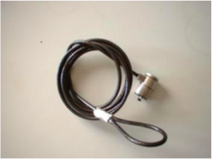
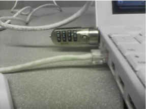

UNIT5 <<
Previous Next >> w7 kaggle
PCH 19 Notebook Power and Physical Security

Overview 概述
In this module on notebooks, we will discuss the various types of batteries used in notebook and laptop computers, along with battery construction, battery care, and various power level indicators. We will also discuss the variety of power sources a notebook has access to, including its battery, AC adapter, and docking stations. Next, we will discuss the proper disposal procedures that should be used when someone upgrades or breaks their notebook. Finally, we will discuss the physical security of notebooks. We will look at the construction of these devices, as well as the proper installation of the security cable and how it is connected to the notebook.
在筆記型電腦上的模塊中，我們會討論筆記型電腦和筆記型電腦中使用的各種不同類型的電池，以及電池結構，電池維護和各種電量的指示器。我們還會討論筆記型電腦可以使用的各種電源，包括電池，AC適配器和擴展塢。再來，我們又會討論當有人升級或破壞筆記型電腦時應使用的正確的處理順序。最後，我們會討論筆記型的物理安全性。我們也會研究這些設備的結構，安全電纜的正確安裝以及如何將他們連接到筆記型電腦。
Battery Types 電池類型
Laptops and notebooks can receive power from several different types of batteries. The batteries are used to provide direct current (DC) to your notebook, and the batteries are then recharged by the alternating current (AC) adapter that connects your notebook to the wall outlet. The AC adapter actually works as a transformer, converting the wall outlet’s high-voltage AC into low-voltage DC that your notebook uses to charge its battery.
筆記型電腦和筆記型電腦可以透過很多種不同類型的電池提供電源。電池用於筆記型電腦提供直流（DC），然後再透過將筆記本電腦連接至牆上插座的交流（AC）適配器為電池充電。交流適配器實際上充當變壓器，將牆壁裝電源插座的高壓AC轉換為筆記本計算機用來為其電池充電的低壓DC。

The notebook battery is an enclosed plastic casing with individual battery cells on the inside, as shown in the images above. Older notebooks used either nickel-cadmium (NiCd or NiCad) or nickel-metal hydride (NiMH) batteries. These types of batteries are seldom used in modern notebooks and laptops because they suffered from what is termed the “memory effect.” Basically, the “memory effect” occurs when a battery loses its capacity to fully recharge if it is discharged repeatedly the same amount and then recharged without being fully drained first. For example, if every time your notebook battery’s charge was at 20 percent you went and recharged it, then 20 percent charge would become the new zero for your battery, reducing the overall charge available to only 80 percent of the original capacity.
筆記型電腦的電池是一個封閉的塑料外殼，內部裝有單個電池，如上圖所示。較舊的筆記型電腦使用鎳鎘（NiCd或NiCad）或鎳氫（NiMH）電池。這些類型的電池很少用於現代的筆記型電腦，因為它們受到了所謂的“記憶效應”。基本上，如果反覆放電相同量的電池而失去其完全充電的能力，則發生“記憶效應”，然後先充電而又沒有完全耗盡。例如，如果你每次筆記型電池的電量為20％時都要去充電，那麼20％的電量將成為電池的0％，從而將總可用電量減少到原始容量的80％。
Both of these battery types were replaced with lithium-ion batteries. The lithium-ion batteries do not suffer from the memory effect issue. They perform better than other types of batteries, and are lighter in weight, which increases a notebook’s mobility. Lithium-ion batteries also feature a rapid-charging option that allows faster charging when the user is in a hurry. These batteries are more environmentally friendly than the previous types, as well.
這兩種電池都被鋰離子電池取代。鋰離子電池不會受到記憶效應問題。它們的性能比其他類型的電池更好，而且重量更輕，這增加了筆記本的移動性。鋰離子電池還具有快速充電選項，當用戶急忙時可以更快地充電。這些電池也比以前的電池更環保。
To best care for your notebook or laptop, always use the approved battery type for your model. Using unapproved batteries in your notebook can lead to the notebook catching fire or exploding. In order to maintain notebook batteries at peak operating efficiency, keep the batteries at room temperature and avoid heat. If your notebook has a full charge and is subjected to high temperatures, the longevity of your battery will decrease. Batteries deteriorate over time, so purchase one with the most recent manufacturing date for the longest life. Also, getting a higher-capacity battery will provide a longer battery life on a given charge. Since lithium-ion batteries do not have a memory effect, it is often better to use partial-discharge cycles for notebooks and laptops that use those batteries. Note, while there is no memory effect, some lithium-ion batteries suffer from a “digital memory” that decreases the accuracy of the power gauge. To recalibrate the power gauge, you need to fully discharge the battery routinely, such as every few months, then completely recharge it. Lastly, if you are planning on storing your notebook for a while, it is best to discharge the battery to about 50 percent first, then store it in a cool, dry place. This will prolong the life of the battery and prevent you from having to waste money on a replacement.
為了最好地保護筆記型電腦，必須常常為你的型號使用認可的電池類型。在筆記型電腦中使用未經許可的電池可能會導致筆記本計算機著火或爆炸。為了使筆記型電腦的電池保持最高工作效率，請將電池保持在室溫下並避免發熱。如果你的筆記型電腦充滿電並且處於高溫下，則電池的壽命會降低。電池會隨著時間的經過而變質，因此請購買製造日期離最近的電池以延長使用壽命。同樣地，在給定的電量下，使用容量更大的電池將提供更長的電池壽命。由於鋰離子電池沒有記憶效應，因此對於使用這些電池的筆記型電腦，最好使用部分放電循環。注意，雖然沒有記憶效應，但是一些鋰離子電池會受到“數字記憶”的困擾，這會降低功率計的精度。要重新校準功率計，你需要定期（例如每幾個月一次）對電池完全放電，然後將其完全充電。最後，如果你打算將筆記型電腦存放一段時間，則最好先將電池放電約50％，然後將其存放在陰涼乾燥的地方。這樣可以延長電池壽命，並可以避免你在更換電池時浪費金錢。然後完全充電。
The amount of battery life is indicated in a number of ways in a notebook, depending on the computer model. All modern operating systems provide a digital gauge inside the operating system. This indication can be set by the user to show either the percentage of battery life remaining (such as 53 percent left), the time remaining until the battery runs out (such as 1 hour, 43 minutes to empty), or the time to full charge (such as 34 minutes to full charge). Some models of batteries, though, have a battery gauge included on the battery itself. This will use a scale, such as five circles that will light up to show the remaining life of the battery.
根據筆記型電腦的型號，筆記型電腦可以透過很多種方式指示電池壽命。所有現代操作系統都在操作系統內部提供數字量規。用戶可以設置此指示以顯示剩餘電池壽命百分比（例如剩餘53％），直到電池用完的剩餘時間（例如1小時43分鐘用完）或充滿時間充電（例如充滿電需要34分鐘）。但是，某些型號的電池在電池本身中附帶一個電池電量計。這將會使用一個刻度，例如五個圓圈，它將點亮以顯示電池的剩餘壽命。

AC Power 交流電源
As previously stated, the battery is used to provide direct current to your notebook and the battery is then recharged by the AC adapter that connects your laptop to the wall outlet. While the battery directly powers the notebook’s components, much like a power supply in a desktop, the battery doesn’t perform any transformation of the power it receives or sends out. These functions are handled by the AC adapter. Many docking stations provide the ability to either use the regular AC adapter as their power source, or use a built-in AC adapter to perform the transformation of the power from AC to DC. If the laptop is using a docking station, it still uses the battery to provide power to the laptop, and the docking station to charge the laptop’s battery. A port replicator , on the other hand, requires the AC adapter to perform the transformation for it.
如前所述，電池用於向筆記型電腦提供直流電，然後通過將筆記型電腦連接至牆上插座的交流適配器為電池充電。儘管電池可以直接為筆記型電腦的組件提供電，就像台式機中的電源一樣，但電池不會對其接收或發出的功率進行任何轉換。這些功能由交流適配器處理。許多擴展塢都可以使用常規的AC適配器作為電源，也可以使用內置的AC適配器執行從AC到DC的電源轉換。如果方便攜帶筆記型電腦正在使用擴展塢，它仍將使用電池為便攜式計算機供電，並使用擴展塢為便攜式計算機的電池充電。一個 端口復制器 而另一方面，要求AC適配器為其執行轉換。

Docking stations are used to add capabilities to a laptop and create a "desktop" experience. For example, in the image above, you can see that the docking station has numerous USB ports, a PS/2 port for keyboard/mouse, a modem port, Ethernet port, VGA and DVI display outputs, audio input and output ports, as well as serial and parallel connections. Some docking stations even have built-in hard drives and optical drives for additional storage. A port replicator, on the other hand, only provides the same ports that already exist on the laptop. This is used for quick connection and disconnection to the various external devices when the laptop is returned to the office environment.
擴展塢用於筆記型電腦添加功能並創建“桌面”體驗。例如，在上圖中，你可以看到擴展塢具有多個USB端口，一個用於鍵盤/鼠標的PS / 2端口，一個調製解調器端口，以太網端口，VGA和DVI顯示輸出，音頻輸入和輸出端口，如以及串行和並行連接。某些擴展塢甚至具有內置硬盤驅動器和光盤驅動器，用於額外存儲。另一方面，端口復制器僅提供筆記本電腦上已經存在的相同端口。當筆記型電腦返回辦公環境時，可用於快速連接和斷開與各種外部設備的連接。
Proper Disposal Procedures 正確的處置程序
Rechargeable laptop batteries contain hazardous materials such as mercury, cadmium, and lead. Many states have laws governing the disposal of batteries containing toxic materials. Often disposing of them in the trash and sending them to a landfill is illegal. Recycling, sometimes referred to as eCycling in the case of computers and other electronics, reduces the amount of toxic elements entering the waste stream and is often the required or preferred disposal method. Recycling saves landfill space, conserves our natural resources, and reduces the amount of electronic waste generated by residents in the state. For example, according to the State of Maryland, eCycling reduces more than 150,000 tons of waste every year. Local regulations (state, county, or city) dictate the proper methods of disposing of the physical laptop and its components.
筆記型電腦可以充電電池包含有害物質，例如汞，鎘和鉛。許多的州都有管理含毒物質電池處置的法律。通常，將它們丟棄在垃圾桶中並送到垃圾填埋場是非法的。回收，有時在計算機和其他電子設備中稱為“循環”，可減少進入廢物流的有毒元素的數量，這些通常是必需或首選的處置方法。回收利用可節省垃圾填埋場的空間，節約我們的自然資源，並減少該州居民產生的電子廢物量。例如，據馬里蘭州稱，電子騎車每年可減少15萬噸以上的廢物。當地法規（州，縣或市）規定了處置物理筆記型電腦及其組件的正確方法。
If, instead of disposing of the entire laptop, you wish to sell the device, you should first remove your personal information from the laptop. The best way to do this is to perform a hard drive format using overwrite software. This is also known as a “secure erase,” where every portion of the hard disk is rewritten with a “0” in order to fully clear your personal data from the device. Then, if necessary, you can reinstall the operating system and sell the device.
如果你想出售設備而不是丟棄整個筆記型電腦，則應該首先從筆記型電腦中刪除個人訊息。最好的方法是使用覆蓋軟體執行硬盤驅動器格式。這也稱為“安全擦除”，其中硬碟的每個部分都用“ 0”重寫，以便從設備中完全清除你的個人數據。然後，如果有必要，你可以重新安裝操作系統並出售設備。
Security 安全
Security cables are used to ensure that laptops are not physically removed from a particular area. Security cables are constructed much like a bicycle security lock, with a thick, carbon strengthened steel or metal cable that has a loop on one end and a lock on the other. The lock end has a T-shaped head that is inserted into the Kensington security slot on the computer (named after the first company to produce these locks). The locks are set using either a key or a combination-style lock. The other end, with the loop, can then be secured to a stationary device, like a pole or the desk itself. Often, these are installed by looping the lock end through the loop end, as it goes around a portion of the desk, securing the security lock to a location on the desk. Some security cables also have an audible alarm feature that alerts when someone tries to force the lock. Remember that these physical security measures only work when used properly. Tether a laptop to a strong, unbreakable, non-movable object.
安全電纜適用於確定未從特定區域物理移除便筆記型電腦。安全纜線的結構很像自行車安全鎖，由一根粗的碳增強的鋼或金屬纜線組成，該纜線的一端有一個環，另一端有一個鎖。鎖端有一個T形頭，該頭插入計算機上的Kensington安全插槽（以生產這些鎖的第一家公司的名字命名）。可以使用鑰匙或組合鎖來設置鎖。然後可以將帶有環的另一端固定到固定裝置，例如桿子或桌子本身。通常，通過將鎖端繞在桌子的一部分周圍，將鎖端穿過環形端進行安裝，從而將安全鎖固定到桌子上的某個位置，從而進行安裝。一些安全電纜還具有聲音警報功能，當有人試圖強行鎖定時會發出警報。請記住，這些物理安全措施只有在正確使用後才能起作用。將筆記本電腦系在堅固，不可移動的物體上。



UNIT5 <<
Previous Next >> w7 kaggle
Copyright © All rights reserved | This template is made with by Colorlib